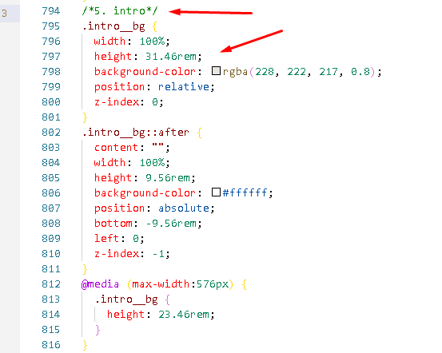

Book of my story HTML Template Documentation
Thank You for purchasing this template, I hope You enjoy it!
1. Unzip the template
- to unzip you need winzip program
- Unzip https://www.winzip.com/win/ru/downwz.html
- after unzipping the dist.zip archive
- template will consist of such folders:
- documentation includes documentation files
- screenshots includes screenshots of templates
- site includes ready-to-use templates
- sources includes psd, less, js files
2. Template Structure
- - You can find all files in dist folder
- - site folder contain all compiled and ready to use files
- - site folder contain fourth html template:
- first__template dir...
- second__template dir...
- third__template dir...
- fourth__template dir...
- - sources folder contain all sources for your work code:
- less files
- js files
- psd files
- - CSS, js, files you can find in:
- site/your__template/css
- site/your__template/js
- - LESS files you can find in dist/sources/your__template/less folder.
- - min.JS files you can find in dist/sources/your__template/js/block folder.
- - PSD files you can find in dist/psd folder.
- - Screenshots image files you can find in dist/sources/screenshots folder.
- - All libs JS you can find (All libraries are licensed mit.) dist/sources/your__template/js/vendor folder.
- - All libs CSS you can find (All libraries are licensed mit.) dist/sources/your__template/css/vendor folder.
3. How to edit template
Program requirements
- Sublime Text 3 http://www.sublimetext.com/3 used to edit files: .HTML .CSS .JS
- Adobe Photoshop CS (or another version) dowload free trial version used to edit files: .PSD
editing HTML and CSS files
- — all HTML files are in folders: dist/...select__template../index.htmldist/...select__template../src/ all page html files
- — To open an HTML file with HTML editor you should select “File/Open” from top menu and browse to the location of your HTML file. Another way to open file is just drag and drop it from file browser to your HTML editor window. Other ways of file opening, such as copy and paste, may cause HTML structure damage and are not recommended.
- — Sublime Text 3 is a program that allows you to edit the content of HTML CSS JS files
- — CSS means “Cascading Style Sheets”. CSS is a system of rules that directly affect the display properties of your web pages such as colors, fonts and layouts. CSS style blocks are also commonly referred to as rules. These rules can be embedded into an individual HTML page or placed in an external file that will control many individual pages on your website. Thus changing a property in one place in the linked style sheet will immediately make that change on every web page that is linked to it.“CSS Web Template” is a website design created using Cascading Style Sheets (CSS) technology.
- — CSS files are used to change the look of the template. Color, font size, font style, column and row sizes, object spacing on the page, and many other properties.
- — CSS basics documentation Basic documentation CSS
- — all CSS files are in folders:
dist/...select__template../ccs/style.css
dist/...select__template../css/style.min.css it is a compressed file ready for use but cannot be edited. - — To open an CSS file with HTML editor you should select “File/Open” from top menu and browse to the location of your CSS file. Other ways of file opening, such as copy and paste, may cause CSS structure damage and are not recommended.
editing JS/JQuery files
- — JavaScript documentation Basic documentation JS
- — jQuery documentation Basic documentation Jquery
- — all JS files are in folders:
dist/...select__template../js/block
dist/...select__template../js/block/....min.js it is a compressed file ready for use but cannot be edited. - — To open an JS file with HTML editor you should select “File/Open” from top menu and browse to the location of your JS file. Other ways of file opening, such as copy and paste, may cause JS structure damage and are not recommended.
- — If you want to make changes to .js files, you must first have a basic knowledge of the JavaScript programming language and the Jquery library
editing PSD files
- all files are placed in a folder: dist/sources/psd
- open this files in Adobe Photoshop CS (or another program)
add img files
- — all image files are located in dist/site/...select__templated.../img/
- — in the image directory, select the directory with the block name
- — insert your picture
- — your image has the same name, extension and size (the image you are replacing)
- — you can add any image to this template, but then find the img tag in the block that interests you in the HTML file. In the src attribute, specify the correct path to the image.
work with fonts
- — these templates use google fonts
- — You can use any available Google Fonts
- — Get Started with the Google Fonts API
- — Google Foonts
An example of a style change for one of the template blocks
- — first template (intro block)
- — find selector do you want to change...
- — find the comment block to which this selector applies...
- — open file dist/site/first__template/css/style.css
- — find selector do you want to change... (.intro__bg)
- 
- — in this block you can change width, height, background-color, position values and add new values
4. Links to configure the libraries used in this template
- typed-js http://mattboldt.github.io/typed.js/docs/
- — if you want change type.js text
- — in HTML file find comment block typed.js
- — in row strings: typed your text
- materializecss.com/waves https://materializecss.com/waves.html
- — if you want change waves effect
- — in HTML file find element has class waves
- — create and use your own style
- jquery.instagramFeed https://www.sowecms.com/demos/jquery.instagramFeed/index.html
- — if you want setings insta feed plugin
- — in HTML file find comment block insta feed
- — in row tag: write your instagram tag
- — you must change this settings to all html pages
- lazylinepainter.info https://github.com/camoconnell/lazy-line-painter#documentation
- — if you want setings lazy line painter plugin
- — in HTML file find comment block leazy line painter

- — you can change strokeColor, repeat, strokeWidth parametrs
- — you must change this settings to all html pages
- Simple Parallax Scrolling https://github.com/pixelcog/parallax.js/
- — this plugin is customized for the needs of this template. You can find more customization options on the developer page. The link above.
- Slick slider https://github.com/kenwheeler/slick/
- — this plugin is customized for the needs of this template. You can find more customization options on the developer page. The link above.
- wow.js animation https://wowjs.uk/docs.html
- — this plugin is customized for the needs of this template. You can find more customization options on the developer page. The link above.
- Animate.css https://daneden.github.io/animate.css/
- — if you want setings animate.css plugin
- — in HTML file find element has class wow
- — you can change class animation. Animation classes are in the link on the developer page.
- — you can use this animation to fourth template.
- Rellax https://github.com/dixonandmoe/rellax
- — this plugin is customized for the needs of this template. You can find more customization options on the developer page. The link above.
- jQuery ripples plugin https://github.com/sirxemic/jquery.ripples/
- — this plugin is customized for the needs of this template. You can find more customization options on the developer page. The link above.
4. Credits
- JQuery http://jquery.com/
- Animate.css https://daneden.github.io/animate.css/
- WOW.js https://github.com/matthieua/WOW
- Typed.js https://mattboldt.com/demos/typed-js/
- Waves https://materializecss.com/waves.html
- jquery.instagramFeed https://github.com/jsanahuja/jquery.instagramFeed
- lazylinepainter.info http://lazylinepainter.info/
- Simple Parallax Scrolling http://pixelcog.github.io/parallax.js/
- Slick slider http://kenwheeler.github.io/slick/
- Rellax JS https://dixonandmoe.com/rellax/
- jQuery Ripples https://sirxemic.github.io/jquery.ripples/
- Google Fonts https://fonts.google.com/
- FontAwesome http://fontawesome.io/
- SVG icons http://www.flaticon.com/
- Images https://unsplash.com/
- Images https://www.pexels.com/@alipazani
- Images https://www.pexels.com/@tatianasyrikova